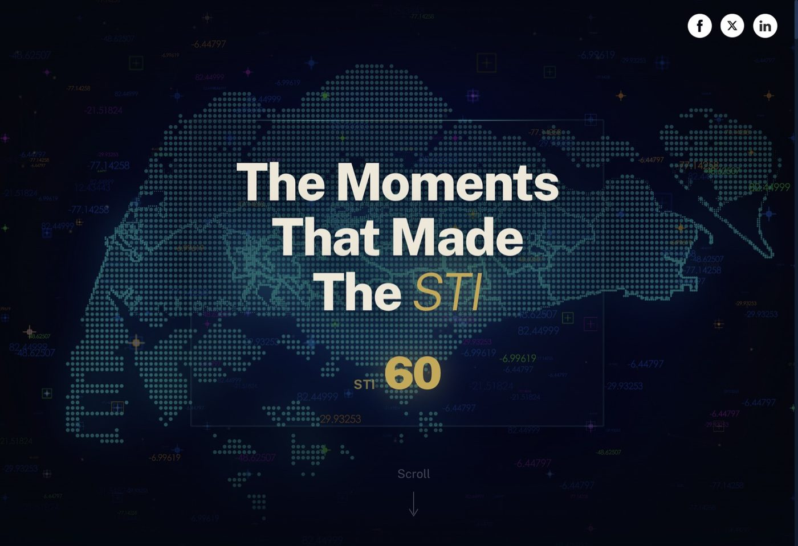
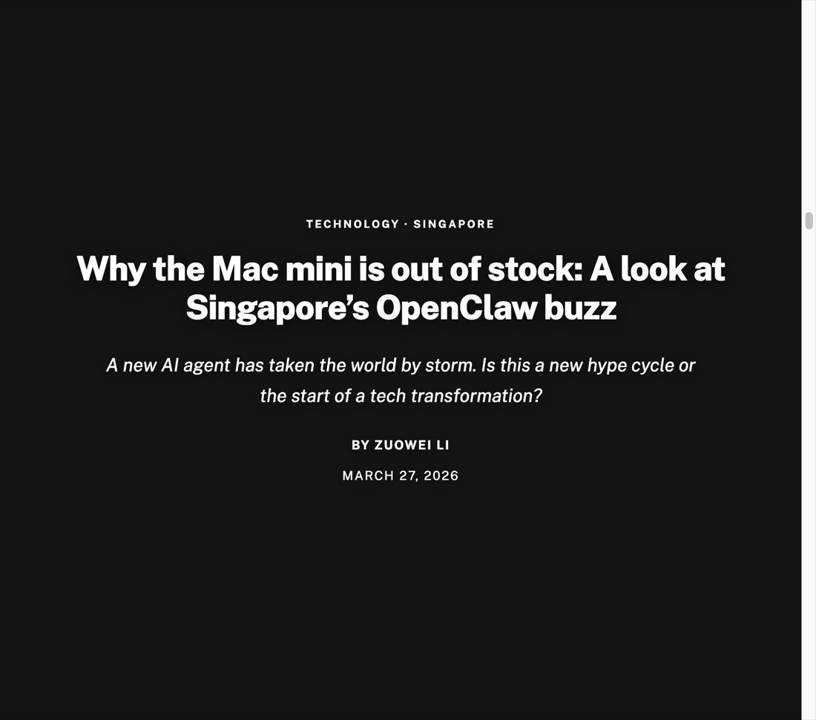
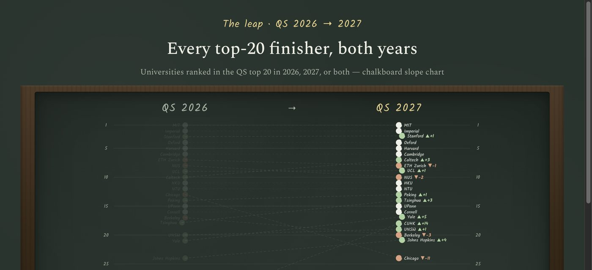
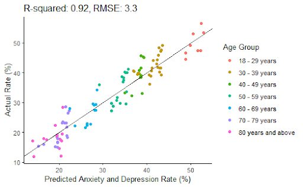

BT AI Tools — Internal finance AI tool
Unified chart generation for multiple brand skins — print PDF, preview images, and Datawrapper payloads from one recipe registry, with visual regression gates.

Intro
I work at the intersection of AI, product, and delivery — scoping messy problems, shaping clear solutions, and shipping systems teams can run: chart automation, data products, and agent-ready experiences that turn complexity into trusted outcomes.
Selected work across AI-enabled products, data platforms, and solution delivery — from problem framing to shipped systems.
Unified chart generation for multiple brand skins — print PDF, preview images, and Datawrapper payloads from one recipe registry, with visual regression gates.
Interactive regional intelligence experience for enterprise energy, AI adoption, and sustainability findings.
Market-facing interface work around Singapore index storytelling and readable financial presentation.

Interactive graphic on Singapore’s OpenClaw AI-agent buzz — Mac Mini shortages, adoption patterns, and what the hype means for the next wave of agents.

Product UI for browsing and comparing university data with a focused interaction model.

Map and chart work on US anxiety-rate predictions — early exploration of spatial + categorical storytelling.

Comfortable owning the problem-to-product path: discovery, solution design, and delivery with engineering — especially where AI and data meet real workflows.